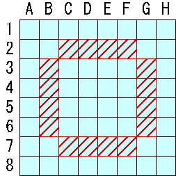

リバーシは２人で対局するボードゲームです。
各プレイヤが盤上に交互に石を置いていき、相手の石を自分の石で挟むことによって自分の石にすることができます。
最終的に石の多い方のプレイヤが勝ちです。
盤 : 通常64個（8x8）のマスが描かれた盤をつかいます。
10x10のマスが描かれた盤、正方形でない盤を使用することもあります。
石 : 表裏が黒と白に塗り分けられた円盤です。
ゲーム開始時には、４個の石を下図のように並べます。
最初に各プレイヤは自分の使う色を決めます。
次に交互に手を進めますが、黒が先手です。
各プレイヤは交互に盤上に石を置きます。
このとき、すでに置いてある自分の石と、新たに置いた石とで、相手の石をタテ、ヨコ、ナナメいずれかの方向に挟まなければいけません。
石は何個でも挟んでよく、またいくつの方向に挟んでもかまいません。
挟んだ相手の石を全て返して自分の石にした後（下図参照）、相手の番となります。
相手の石を挟める手がない場合にはパスとなり、相手が続けて手を進めます。
パスの回数に制限はなく、パスの行い過ぎが理由で負ける事はありません。
また、相手の石をはさめる手が１つでもある場合には、パスをすることはできません。
その場合には必ず石を置かなければなりません。
| >> |
どちらのプレイヤも石を置けなくなったときにはゲーム終了です。
自分の石が多いほうのプレイヤが勝ちです。
どちらの石も同じ数の場合には引き分けです。
石の数を「石数（いしかず）」、両者の石数の差を「石差（せきさ）」と呼びます。
例えば盤面に黒石が34個、白石が30個あった場合には「４石差で黒の勝ち」となります。
各マスを座標で表すことがあります。
座標は下図の通りです。
マスによっては特殊な呼び方があります。
- 隅
A1、A8、H1、H8の４マスを隅と呼びます。
- 星またはＸ（エックス）
隅の斜め隣の４マスを星またはＸと呼びます。
- 辺
盤の周囲に沿った４列を辺と呼びます。
- 中辺
辺より１つ内側にある列を中辺と呼びます。

- Ａ、Ｂ、Ｃ
辺の各マスには名前がついています。
Ａ : 隅から２マス離れたマス
Ｂ : 辺の中央にあるマス
Ｃ : 隅に隣接するマス
- ボックス
中央の４x４マスをボックスと呼びます。

- ボックスコーナー
ボックスの隅にあるマスをボックスコーナーと呼びます。